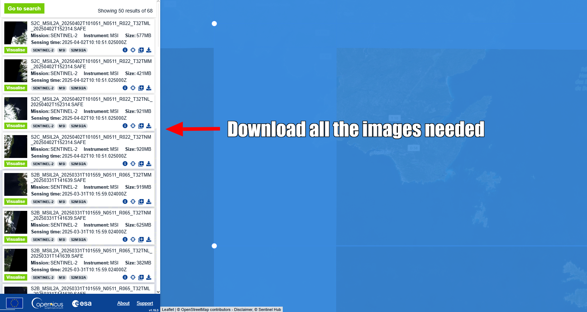
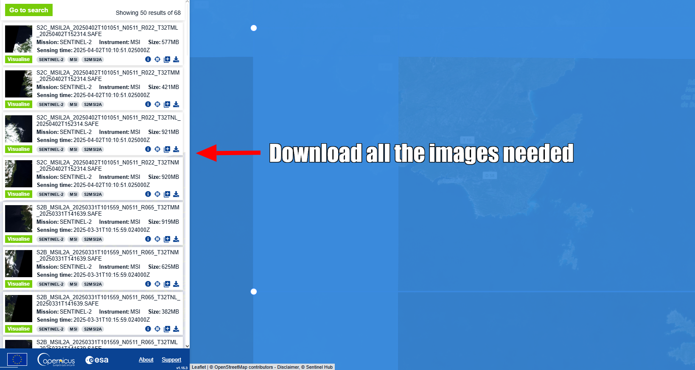
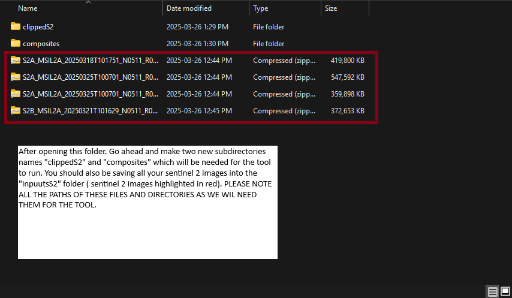
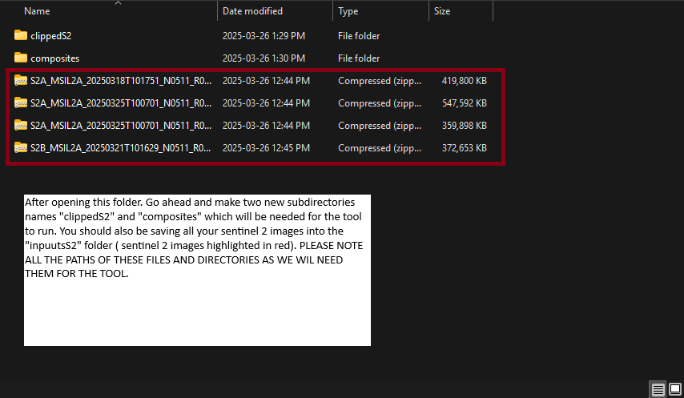
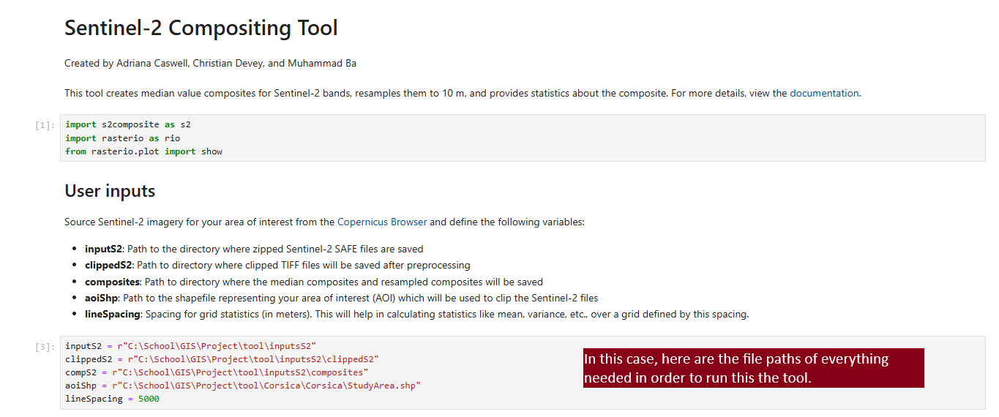
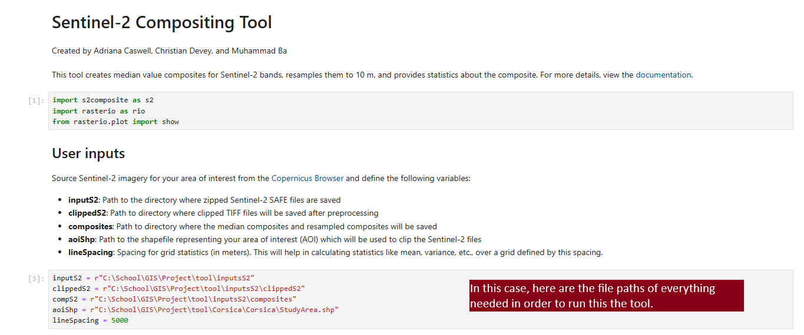

Sentinel-2 Compositing Tool Demo¶
Created by Adriana Caswell, Christian Devey, and Muhammad Ba
This demo showcases the Sentinel-2 Compositing Tool, designed to streamline the process of working with Sentinel-2 imagery. The tool generates median value composites from multi-temporal Sentinel-2 data, resamples them to a consistent 10m resolution, and performs various statistical analyses to provide insights into the data. This can be useful for monitoring vegetation, land use, and other environmental factors over time.
Demo Data¶
The demo is pre-configured with a set of demo data that can be used to test the tool. The demo data includes:
StudyArea.shp: Defines the area of interest (AOI) for analysis.
Sentinel-2 Imagery: The corresponding Sentinel-2 images aligned with the study area, which are provided in the
demo/S2folder along with a text file listing the required imagery and download links.
Running The Tool¶
The tool automates the preprocessing, compositing, and analysis tasks, saving valuable time and ensuring reproducibility. The process includes:
Preprocessing: Clipping Sentinel-2 SAFE files to the AOI and converting them to the appropriate format.
Compositing: Creating median value composites to summarize multi-temporal data into a single image.
Resampling: Rescaling the image resolution to 10m for consistency.
Statistical Analysis: Calculating key statistics such as mean and variance over defined grid areas.
Once you run the tool, it will automatically execute all necessary steps in sequence, from data preprocessing to the final visualization and statistical analysis, making it user-friendly and efficient. However, if you prefer, you can also run each cell individually to have more control over the process and explore the results at each step.
Throughout this guide, we will provide screenshots for each step to help you visualize the process and ensure everything is set up correctly. This tool is especially valuable for researchers and practitioners working with satellite data who need to quickly and accurately analyze large datasets.
By the end of this demo, you will have learned how to use the tool wiht the provided demo/S2, also customize inputs, and interpret the resulting output, enabling you to apply it to your own Sentinel-2 data for environmental monitoring and analysis.
Installation¶
Clone the repository:
git clone https://github.com/GEOM4009/W25Project_Compositing.git
Install Anaconda if you haven’t already.
Navigate to the cloned directory and create a Conda environment:
conda env create -f s2compo_env.yml
Activate the environment:
conda activate s2compo
Open the Sentinel-2 Compositing Tool:
jupyter lab S2CompoTool.ipynb
Demo Data Setup¶
In the demo/S2 folder, you will find a text file that outlines the specific Sentinel-2 imagery used in the demo. This file provides detailed information on the imagery aligned with the study area, ensuring that the selected satellite data matches the area of interest for your analysis. The images have already been downloaded and are pre-organized in the folder, so there is no need for you to manually download or save any additional files.
Additionally, the StudyArea.shp file is already included in this folder. This shapefile defines the Area of Interest (AOI) for the analysis, which is used to clip the Sentinel-2 imagery. Since the AOI is pre-configured to match the study area, you don’t need to make any modifications. However, if you want to analyze a different region, you can replace this shapefile with one that corresponds to a new AOI.
The demo/S2 folder is already set up with all the necessary files, and the tool is configured to automatically detect and use them during the preprocessing, compositing, and analysis steps. This setup ensures that you can run the demo without any additional configuration or file management.
Downloading your own Sentinel-2 Imagery¶
First, download Sentinel-2 data from the Copernicus Browser.

 

Getting Started¶
Set Up User Inputs¶
In this section, you will define the paths and other settings necessary for the tool to run properly. These variables control the location of your Sentinel-2 data, the clipped data, and where your output files will be saved. Make sure to adjust the paths according to your system and data storage locations.
 

In the S2CompoTool.ipynb Notebook, define the necessary input variables:¶
inputS2 = "demo/S2"
clippedS2 = "demo/S2/clipped"
compS2 = "demo/S2/composites"
aoiShp = "demo/S2/StudyArea.shp"
lineSpacing = 5000
 

These paths should be adjusted based on your own paths.
Run the Tool¶
Once the variables are set, you can Run All Cells or One at a time in the Jupyter Notebook, and the tool will automatically execute all steps from preprocessing to visualization and statistical analysis.
Steps Of The Tool¶
Preprocessing¶
Clip Sentinel-2 SAFE files to the Area of Interest (AOI) and convert them to TIFF format:
s2.prepS2(inputS2, aoiShp, clippedS2)
This step will create clipped TIFFs, which I will show in a screenshot.
Create Composites¶
The tool generates median value composites and resamples them to 10m resolution:
bands, meta10m, meta20m, meta60m = s2.sortBands(clippedS2)
s2.compositeBands(bands, meta10m, meta20m, meta60m, compS2)
composites = s2.resampleBandsTo10m(compS2, overwrite = False)
Generate Composite Statistics & Display Composites¶
The tool calculates key statistics, such as mean and variance, over a grid defined by lineSpacing:
stats = s2.gridStats(bands, lineSpacing)
To visualize the composite bands:
s2.showBands(composites)
To generate an RGB composite:¶
R = "demo/S2/composites/B04_resampled_10m.tif"
G = "demo/S2/composites/B03_resampled_10m.tif"
B = "demo/S2/composites/B02_resampled_10m.tif"
s2.showRGB(R, G, B)
To display a single band:¶
boi = "demo/S2/composites/B01_resampled_10m.tif"
with rio.open(boi) as src:
show(src)
Troubleshooting¶
Check Error Messages¶
Review any error messages generated during the process to diagnose specific issues.
File Paths¶
Solution: Ensure the paths for the Sentinel-2 data (
inputS2) and AOI shapefile (aoiShp) are correct. Double-check for typos, extra spaces, and ensure you have the correct file extensions (.SAFEfor Sentinel-2 and.shpfor shapefiles).Note: Use double backslashes (
\\) or single forward slashes (/) for Windows paths.
Data Types¶
Solution: Ensure input paths are pointing to the correct data types. Specifically,
.SAFE.zipfiles for Sentinel-2 imagery and.shpfiles for shapefiles.
Storage¶
Solution: Ensure your hard drive has adequate space to store output files, particularly the TIFF files generated by the tool.
Dependencies¶
Solution: Ensure the tool is being used within the correct environment, specifically the
s2compoconda environment. Do not modify the repo folder structure or the Sentinel-2 SAFE files.
Output Files Not Generated¶
Solution: Verify that output directories are correctly set up and that they are writeable. If output files are not generated, check for errors during execution.
Further Assistance¶
If problems persist, please contact the project contributors or consult the Credits section for additional support.
Credits¶
Adriana Caswell, Christian Devey, and Muhammad Ba for developing the tool, including the design, coding, and testing of the Sentinel-2 Compositing Tool. We contributed to the development of key features, troubleshooting, and documentation to ensure a seamless user experience.
Dr. Derek Mueller for providing valuable guidance throughout the project, offering feedback, and ensuring that the tool’s functionalities align with the project’s goals.
Dr. Anders Knudby for his support and insights into the project’s direction, helping us refine the tool and incorporate best practices in geospatial analysis and compositing.